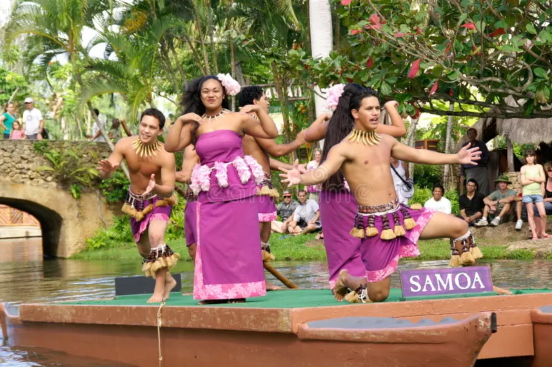

The Samoa Canoe
A Samoan canoe, traditionally called a va‘a, is a vital part of Samoa’s maritime heritage and cultural identity. For centuries, Samoans relied on canoes for fishing, transportation, trade, and long-distance ocean voyaging across the Pacific. These vessels were expertly crafted from local timber and designed to handle both calm lagoons and the open ocean. There are different types of Samoan canoes, including the paopao (a small outrigger canoe used mainly for fishing) and larger double-hulled voyaging canoes used for extended sea journeys. Many featured an outrigger float attached to one side for balance, allowing the canoe to remain stable in rough waters. The construction process required skilled craftsmanship and deep knowledge of materials, tides, and sea conditions. Beyond their practical use, Samoan canoes hold strong cultural and symbolic meaning. They represent connection—to the ocean, to ancestral knowledge, and to the wider Polynesian world shaped by navigation and exploration. Today, traditional canoe building and voyaging are being revived to preserve this important aspect of Samoan heritage and pass it on to future generations.

They are also known for their great knowledge of navigating
Samoa Navigator” is closely connected to the historical name “Navigator Islands,” a title given to Samoa by European explorers in the 18th century. The name was inspired by the exceptional seafaring abilities of the Samoan people, who were known throughout the Pacific for their advanced navigation skills. This recognition highlighted Samoa’s importance in the wider Polynesian voyaging tradition. Long before the use of modern navigation instruments, Samoan and other Polynesian navigators mastered way-finding techniques based entirely on nature. They read the stars, sun, moon, ocean swells, wind patterns, clouds, and bird movements to guide their journeys across thousands of miles of open ocean. These skills were passed down orally through generations and required years of training and experience. Samoa played a significant role in the settlement and movement of peoples across the Pacific. As part of the Polynesian Triangle, it served as both a homeland and a launching point for further exploration and migration. The knowledge and courage of these navigators allowed island societies to connect, trade, and maintain cultural ties across vast distances. Today, the idea of the “Samoa Navigator” symbolizes pride in this rich maritime heritage. Cultural revitalization movements across the Pacific continue to honor and revive traditional navigation practices, celebrating the ingenuity and resilience of Polynesian ancestors. The term represents not just travel, but identity, knowledge, and a deep relationship with the ocean.